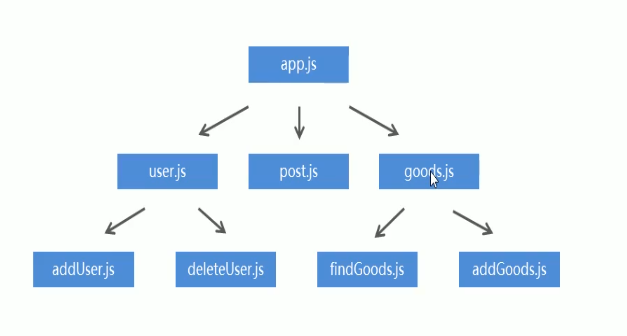
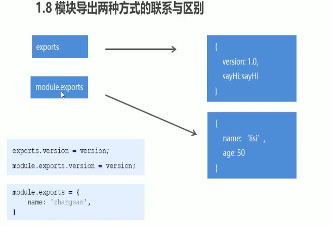

JavaScript开发弊端
JavaScript在使用的时候存在两大问题：文件依赖 和 命名冲突
软件中模块化开发
一个功能就是一个模块，多个模块可以组成完整应用，抽离一个模块不会影响其他功能的运行。
Node.js中模块化开发规范
1,Node.js规定一个JavaScript文件就是一个模块，模块内部定义的变量和函数默认情况下在外部无法得到。
2,模块内部使用 exports 对象进行成员导出，使用 require 方法导入其他模块。
3,在进行模块导入时，模块后缀可以省略。
4,模块成员导出的另一种方法：module.exports
module.exports.version = version; module.exports.sayHi = sayHi;
5,exports对象 是 module.exports 对象的别名（地址引用关系），导出对象最终以 module.exports 对象为准。
